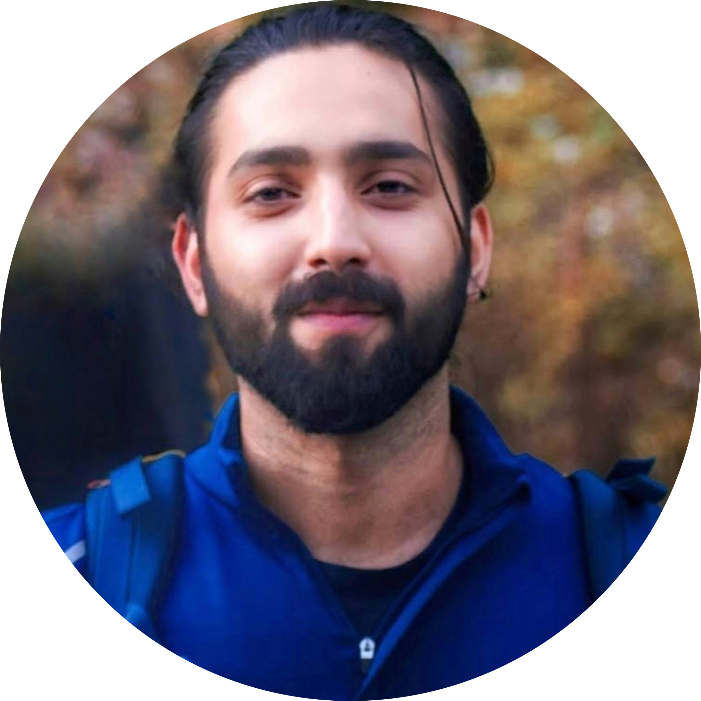

Microbial Genomics & Metagenomics
Decode the
invisible
microbiome.
Expert-led workshops in microbial genomics, metagenomics,
and bioinformatics — from sequencing to discovery.
Hands-on training
for the next generation
of microbial researchers.
01
Introduction to Bioinformatics
A foundation in biological data analysis.
Linux essentials, sequence formats, databases,
and core bioinformatics thinking.
02
Sanger Sequencing Analysis
From chromatogram to confident sequence.
Trace file interpretation, quality assessment,
and BLAST-based identification workflows.
03
Introduction to Bacterial WGS and Mining
End-to-end bacterial whole-genome sequencing —
assembly, annotation, and biosynthetic gene
cluster discovery from real genomes.
04
Amplicon Metagenomics
From raw 16S rRNA reads to community profiles.
OTU/ASV pipelines, diversity metrics, and
ecological interpretation in real datasets.
05
Functional Metagenomics
Uncover what microbial communities do —
gene prediction, pathway reconstruction,
and metabolic profiling from metagenomic data.
06
Pan-genomics and Meta-Pangenomics
Compare genomes across strains and communities.
Core vs. accessory genome dynamics,
and pangenome-scale metagenomic analysis.

Science from the
ocean floor to
the algorithm.
Kartik is a computational biologist and bioinformatics researcher based in Goa, India. Currently a Project Associate II and PhD candidate at the CSIR–National Institute of Oceanography, he leads research on marine sponge-associated microbial communities for drug discovery.
A self-taught computational biologist, Kartik bridges wet-lab microbiology with data-driven genomic analysis. His work spans genome mining, metagenomics, and the identification of novel antimicrobial compounds — with published results in peer-reviewed journals.
As an independent consultant, he supports small colleges and research laboratories with NGS data analysis, reproducible workflows, and student mentorship.
Microbiomes
Goa, India
Published work in
microbial genomics.
Shlok Chitre
Expertise in invertebrate transcriptomics and eukaryotic metagenomics
Research scholar with five years of marine biology experience, specializing in multi-omics approaches for bioprospecting and ecological studies of marine invertebrates.
Instructor II
Expertise area to be announced
Instructor III
Expertise area to be announced
Let's
collaborate.
For workshop inquiries, consulting, or research collaborations —
reach out and let's discuss how we can work together.